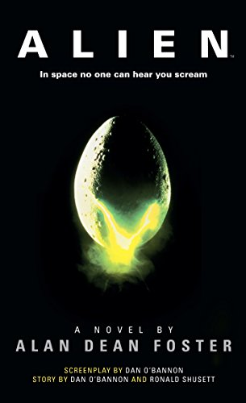
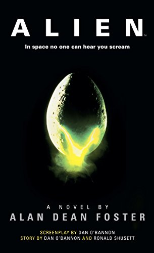
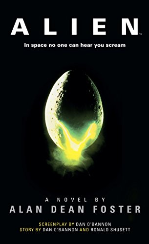

Resenhas
Home
Login
Cadastro
Analises
Chat

O resgate do soldado Ryan (1998) - Steven Spielberg (nota 9.8)
Selecione uma analise
Analise de Ricardo (nota 6)
Essas análises fazem parte do conteúdo limitado do site. Clique
aqui
para fazer login e ter acesso completo
Feito com carinho por um aluno Bandtec. Copyright 2021


 
